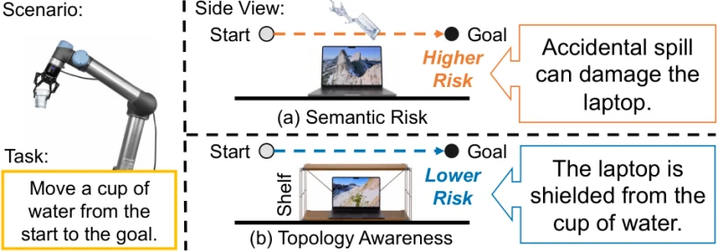

Abstract: Robot motion planning in everyday environments must satisfy hard geometric constraints while accounting for context-dependent semantic risk. We present a foundation-model-guided, topology-aware semantic risk field that extends manipulation safety beyond collision avoidance. For each manipulated-object/scene-object pair, a foundation model provides six directional risk weights and a pair-specific spatial decay scale. The method combines these priors with voxelized 3D scene geometry using topology-aware shielding and geodesic spatial decay. A GPU-parallel backend batches object-level distance and risk computations to construct a dense 3D field that serves as a modular cost for downstream motion planning. We evaluate the field's shielding behavior under full and partial barriers and compare its 3D workspace representation with a pixel-wise semantic-prior baseline. Across three household simulation scenarios, trajectories optimized with the proposed field have lower semantic exposure than collision-only trajectories under the same geometric constraints. We also evaluate the computational practicality and reliability of the supporting pipeline. Together, these results support the proposed field as a practical topology-aware semantic cost representation for manipulation planning beyond collision avoidance.